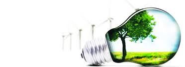

Live safer - What is recycling

Recycling is the process of converting waste materials into new materials and objects. It is an alternative to "conventional" waste disposal that can save material and help lower greenhouse gas emissions (compared to plastic production, for example)...
Why Recycling is Important
Recycling your waste makes you more responsible in the way you use and dispose of it. It is evident from studies that people who do this instinctively cut down on buying unwanted things from the supermarket. They think of how to dispose of the packaging or the product after use before even buying it. As a result, people end up saving a considerable amount of money while also saving the planet.
Recycling Creates Jobs
Apart from the environmental benefits, think of the employment that it can generate.The man power involved in the logistics and processing of your waste is considerable and thus you are helping to keep them in jobs and aid in welfare of their families.
One Man's Waste Can be Another Man's Treasure
Hopefully this article has helped you realize just how important your efforts are. Not just to us, but to our kids, grand kids, and anyone that follows in our footsteps. Take care of your planet, and it will take care of you.